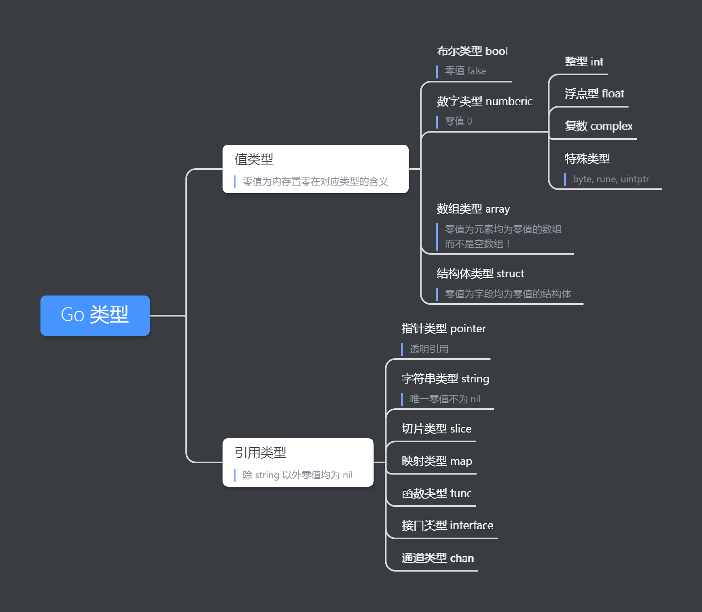

在经过编写 CLI 程序的尝试之后，我们继续回来聊 Go 语言的基础知识。
相信实际写过一些代码之后，会更容易理解。
原计划这期聊 数组和切片。考虑到聊切片时，无论如何绕不开指针和引用的话题，干脆提到前面来。
目录
[TOC]
指针
指针（Pointer）本质上是一个指向某块计算机内存的地址。就像日常的门牌地址一样。只不过内存地址是一个数字编号，对应的是一个个字节（byte）。
当然，高级语言能访问到的内存，经过了操作系统内存管理的抽象，并不是连续的物理内存，而是映射得到的虚拟内存。但现在不必关注这些细节，当它是连续内存就好。
出于内存安全和屏蔽底层细节的考虑，C++ 以后的高级语言大多不再支持指针，而是改为使用『引用』。引用和指针的差别，我们后面说。
Go 作为 C 的『嫡亲』后继，为了性能和灵活性，保留了指针，而且用法基本一样。但 Go 增加了 逃逸分析 和 垃圾回收（GC），一定程度上解决掉了 悬挂指针 和 内存泄漏 的问题，降低了开发者的认知负担。（注意，Go 还是可能发生内存泄漏，只是需要特定的条件，发生概率大大降低了。）
Go 指针
先上代码，来点直观认识
|
|
关于取址运算符
&和 解引用运算符*的详细介绍（优先级、可寻址等内容），请参考第 4 期的《运算符》。解引用 dereference：取址 address 的反操作，意味根据类型，从地址中取出对应的值。
上面的代码输出
|
|
指针的零值是 nil ，对一个 nil 指针解引用会引起运行时错误，引发一个 panic。
通过下图，可以清晰看到4 个变量之间的关系。
注1：
int类型在 64 位机器上是 64 位，占据 8 个字节。注2：两个指针实际上也是保存在内存上，但是为了特意区分，也为了避免内存的图示画得太长，所以把它们单独放在左边示意。
指针允许程序以简洁的方式引用另一个（较大的）值而不必拷贝它，允许在不同的地方之间共享一个值，可以简化很多数据结构的实现。保留指针，让 Go 的代码更灵活，以及更好的性能表现。
指针的类型
指针是派生类型，派生自其它类型。类型 *Type 表示『指向 Type 类型变量的指针』，常常简称『Type 类型的指针』，其中 Type 可以为任意类型，被称作指针的 基类型（base type）。换言之，从 Type 类型，派生出 *Type 类型。
前面说到，内存地址是一个编号，指针的底层类型（underlying type）相当于是整型数（uintptr），宽度与平台相关，保证可以存下内存地址。
但指针又不仅仅是一个整型数，上面还附加了类型信息。指针指向的类型不同，派生出的指针类型也不同。所以指针不是一个类型，而是一类类型；类型有无数多种，对应的指针（包括指向指针的指针）的类型也有无数种。
*int16 跟 *int8 就是不同类型。它们虽然存了同样长度的地址，但 基类型 不同，解引用时会有不同的行为。不同类型的指针之间无法进行转换。（除非通过 unsafe 包进行强制转换。包名 unsafe 道出风险，这个包里的都是危险操作，后果自负。）
|
|
输出
|
|
可以看到，两个指针保存了同样的地址，按理说解引用取出的内容应该是一样的。但事实是，解引用还跟类型相关：地址只指明了取内容的起点，基类型指定取多少个字节，以及如何解释取出来的比特。在这里，对 *uint16 解引用取出了两个字节，按整型数解释为 796 ；对 *uint8 解引用则取了一个字节，解释为 1 。

这里还得知了一个额外的信息：我的电脑是小端字节序，换句话说，数字是从低字节到高字节存储的，也就是 00000001 00000011 ，跟手写的习惯是相反的，所以才会在只取一个字节时，取到了低字节。
逃逸分析与垃圾回收
在 C/C++ 里面使用指针，容易发生两类问题：
悬空指针（dangling pointer）：又叫野指针（wild pointer），是指非空的指针没能指向相应类型的有效对象，或者换句话说，不能解析到一个有效的值。这有可能是对指针做了错误的运算，或者目标内存被意外回收了。
内存泄漏（memory leak）：是指因为疏忽或者错误，没有释放已经不再使用的内存，造成内存的浪费。在 C/C++ 这类没有内存管理的语言里，常见的泄漏原因是在释放动态分配的内存之前，就失去了对这些内存的控制。
Go 里面不允许对指针做算术运算，基本排除对指针运算错误导致的问题。剩下还能出问题的，就是释放内存的时机：释放早了，悬空指针；释放晚了或者干脆没释放，内存泄漏。来看看 C 的例子：
|
|
Go 的解决方案是
逃逸分析：由编译器对变量进行逃逸分析，判断变量的作用域是否超出函数的作用域，以此决定将内存分配在栈上还是堆上，不需要人工指定。这就解决了第一个问题，函数内部声明的变量，其内存可以在函数返回后继续使用。
垃圾回收：由运行时（runtime）负责不再引用的内存的回收。回收算法一直在改进，这里不展开。这就解决了第二个问题，当内存不再使用的时候，只要不引用即可（指针置零，或者指向别的内存），不需要手动释放。
因为这些改进，Go 里面的指针看起来跟 C/C++ 差不多，实际使用的负担却小很多。
需要注意的是，垃圾回收无法解决『逻辑上』的内存泄漏。这是指程序逻辑已经不再用到某些内存，但是仍然持有这些内存的引用，导致垃圾回收无法识别并回收这些内存。这就好比清洁工只能保证地上和垃圾桶的干净，却无法判断办公桌上有哪些东西是没用的。
字段选择器
对于操作数 x ，如果想访问它的成员字段或者方法，可以使用字段选择器（field selector），实际上就是一个句点 . 加上字段名。
举例说 p 是 Person 类型的变量，而 Person 有一个 Name 字段和 Run() 方法，就可以通过 p.Name 和 p.Run() 访问。
这部分的详细内容，要等到结构体和方法部分再展开。这里只提一点与 C/C++ 的区别。
还是以 p 和 Person 为例。在 C/C++ 里，只有 p 是一个 Person 类型变量的时候（相当于Go 语言的 var p Person ），才能用句点访问成员字段。如果 p 是一个 Person 类型的指针（相当于 Go 的 var p *Person ），则要用箭头操作符 -> 访问成员。p->Name 跟 (*p).Name 等价。
Go 里没有箭头操作符。两种操作都用字段选择器 . 表示。实际上这是 Go 提供的一个语法糖，当Go 发现 p 是一个指针而且没有相应名字的成员时，会自动在 *p 里寻找对应的成员。
这样做，好处是省了一个操作符（Go 真的很省操作符和关键字），并且将值变量和指针变量的使用统一起来，在很多场景中可以不必关心使用的是一个值还是一个指针。而坏处也在于，在一些场景混淆了这两者。这个也是到结构体和方法时再细说。这里给一个直观的例子：
|
|
从 **Person 的角度看，会觉得很不讲理：明明 *Person 也没有 Name 这个字段啊，为什么 pd 不报错？
因为编译器识别到它是一个指针，自动从 *pd 里找字段。但是这个忙只帮忙向下找一层，对于 ppd ，ppd.Name 不存在，(*ppd).Name 也没有，就放弃了。
不像在 C/C++ 里很多操作都依赖指针，指针的指针并不少见，Go 里很少用到多级指针，所以这种语法糖只包一层大部分情况够用。
指针、引用和值
这三个概念既存在包含关系，又存在对比，解释起来非常拗口。如果你看完之后还是云里雾里，请耐心再多看几遍，或者实际写代码感受一下。如果还是不能理解，一定是我水平的问题，请先跳过这一部分。欢迎留言告知你的想法。
在第 2 期《常量与变量》里，有提到值的定义：『无法进一步求值的表达式（expression）』，例如 4 + 3 * 2 / 1 的值是 10 。而常量和变量，则可以理解为值的容器。（尽管常量在具体实现上，往往是编译期直接替换为目标值。）
这个定义，强调与量并列。
值也可以理解为『可以被程序操作的实体的表示』。这时不强调与量的区别，如果一个变量保存了一个值，出于方便，有时也称这个变量为一个值。
虽然标题将指针、引用和值并列，其实引用和指针，本身也是值。它们都用来表示『可被程序操作的实体』。
同时指针是引用的一种，是最简单的透明引用。
换言之，三者之间构成这样一种包含关系：引用是值的一种特例，是一类可以间接访问其它值的值，区别于直接使用的值；指针是引用的一种特例，是一类简单的透明引用，区别于不透明的引用。
指针和值
先对比指针和值。
如果不考虑实际使用，从理论上说，指针类型跟别的整型一样，也是一个『可操作实体』，所以它也是值。在Go 里，指针跟所有值一样，赋值和参数传递的时候发生了拷贝。
但在使用中，大部分情况下，指针只是改善性能（避免拷贝）、提高代码灵活性（共享对象）、实现复杂数据结构的工具。我们并不关心指针的值本身，而是关心指针指向的值。为了方便讨论，常常将指针变量跟它指向的值，等同看待。（特别是 Go 取消了箭头操作符 ->，值和指针都用同样的方式访问成员，更是弱化了这个区分。）
几乎没有人会关心指针保存的地址值是多少，只会关心它是否有效，两个地址是否相等。地址的大小对于程序逻辑几乎没有影响。
当强调 指针 和 值 的区别时，这里的值，就是指我们关心的，可以直接使用的值。
实际上，这些区别同样存在于 引用 和 值 之间。只是指针的机制更简单透明，所以用了指针作为讨论的对象。
不透明引用
引用（reference）是指可以让程序间接访问其它值的值。指针是最简单的、透明的引用，也因为其机制透明和自由使用，是最强大有效的引用。
但透明和自由，也要求使用者更了解底层细节，程序更容易出错。想降低使用难度，避免出错，就加上限制，屏蔽底层细节，变成不透明引用。例如，无法获取引用真实的值，无法控制引用的解释，强制的类型安全，禁止类型转换，甚至让它看起来像一个直接访问的值，不像引用。
当我们将 指针 和 引用 并列时，指的就是不透明引用。
来看看其它语言的情况：
C++ 既有指针也有引用。C++ 的引用更接近别名（alias），是受限的指针（不能读取或修改地址值，也不需要显式的解引用，所有操作都作用于指向的值）。
Python 和 Java 都取消了指针，只保留了引用。Java 的基本类型是直接值，除此以外都是引用。Python 更彻底，一切皆对象，所有变量都是对象的引用。所以它们在赋值和传递时，没有拷贝对象，只拷贝引用。如果需要拷贝对象，就需要显式地调用拷贝函数或者克隆方法。一些 Python 教程很形象地称这种引用为『贴标签』。
Go 语言的引用，不像一般意义上的引用。
其它语言的不透明引用，是一种语言级别的统一机制，是作为指针的替代方案出现的。
Go 的引用，则是在已经有了 直接值 和 指针 的前提下，针对特定类型的优化：为了兼顾易用性和性能，针对具体类型，在 值 和 指针 之间折中。每种引用类型，有自己独特的机制。一般是由一个结构体负责管理元数据，结构体里有一个指针，指向真正要使用的目标数据。
这种东西，如果在 C++ 或者 Java 里，就是一个官方提供的类（如 Java 的 String 类），可以看到它的内部机制。而 Go 引用的实现逻辑却内置在 runtime 里，不仅无法直接访问元数据，还表现得像在直接操作目标数据。你会以为它是个普通的值，直到某些行为跟想象中不一样，才想起了解它的底层结构。如果不去看 runtime 的源码，这些元数据结构体仿佛不存在。
Go 的引用类型有：
字符串
string：底层的数据结构为stringStruct，里面有一个指针指向实际存放数据的字节数组，另外还记录着字符串的长度。不过由于string是只读类型（所有看起来对string变量的修改，实际上都是生成了新的实例），在使用上常常把它当做值类型看待。由于做了特殊处理，它甚至可以作为常量。string也是唯一零值不为nil的引用类型。切片（slice）：底层数据结构为
slice结构体 ，整体结构跟stringStruct接近，只是多了一个容量（capacity）字段。数据存放在指针指向的底层数组里。映射（map）：底层数据结构为
hmap，数据存放在数据桶（buckets）中，桶对应的数据结构为bmap。函数（func）：底层数据结构为
funcval，有一个指向真正函数的指针，指向另外的_func或者funcinl结构体（funcinl代表被行内优化之后的函数）。接口（interface）：底层数据结构为
iface或eface（专门为空接口优化的结构体），里面持有动态值和值对应的真实类型。通道（chan）：底层数据结构为
hchan，分别持有一个数据缓冲区，一个发送者队列和一个接收者队列。
这些类型在直接赋值拷贝的时候，都只会拷贝它们的直接值，也就是元数据结构体；间接指向的底层数据，是在各个拷贝值之间共享的。除非是发生了类型转换这样的特殊情况。
如果觉得不好记忆，有一个识别引用类型的快捷办法：凡是零值是 nil 的，都是引用类型。指针作为特殊的透明引用，一般单独讨论。而 字符串 string 因为做了特殊处理，零值为 "" ，需要额外记住。除了引用类型和指针，剩下的类型都是直接值类型。
那些说引用类型只有需要 make() 的切片、映射、通道 三种的说法，是错误的！
如果不记得都有哪些类型，零值是什么，可以看第 3 期《类型》。或者看下图的整理：

由于每一个类型的实现机制都有所不同，具体细节留到介绍这些类型时再讨论，不在这里展开。感兴趣可以到 go目录/src/runtime 下看源码（每个类型有自己单独的文件，如 string.go，个别没有单独源码的，在 runtime2.go 里面）。
需要注意的是，Go 通过封装，刻意隐藏引用类型的内部细节。隐藏细节，意味着没有对这些细节作出承诺，这些细节完全可能在后续版本中变更。实际上这样的变更已经发生过。了解这些细节，是为了更好理解类型的一些特殊行为，而不是要依赖于这些细节。（考虑到海勒姆定律，这些细节最终还是会被一些程序依赖。）
由于『引用类型』这个术语边界不明，特别是 Go 的实现方式跟其它语言存在差异，在表述上常常会造成混乱和误解，go101 的作者老貘推荐在 Go 里改为使用『指针持有者类型』来代替。这个术语是指一个类型要么本身就是一个指针，要么是一个包裹着指针的结构体，它的变量本身是一个直接值，这个值另外指向间接的值。当因为赋值或传参发生拷贝时，只拷贝了直接值部分，间接值被多个直接值共享。
指针传递、引用传递和值传递
因为指针和引用本质上也是值，字面意义上，Go 里面所有传递都是值传递。这句话正确却没有指导意义。
Go 里的赋值和传参，总是会把传递的值本身拷贝一份。但如果这个（直接）值指向别的（间接）值，它所指向的（间接）值不会发生递归拷贝。
因为这个特性，加上前面介绍的 直接值 、不透明引用 和 指针 的区别，这三种传递在使用上是有区别的。区分也很简单，赋值和参数的类型是什么类型，就是对应的传递方式。
（直接）值传递：值发生了拷贝。对新值的任何修改，都不会影响原来的值。
除非这个值是一个结构体，结构体成员字段里有引用类型或者指针，那么对这个字段而言，则是引用传递/指针传递。
引用传递：元数据发生了拷贝，但底层的间接值没有拷贝，仍然共享。
对间接值的修改，会影响所有副本。（如，修改切片里的某个元素，就是修改了底层数组里的某个元素）
但对元数据的修改则不会影响其它副本。（如，对切片提取子切片，实际上修改了切片的访问范围）
有一种特殊的情况，就是修改元数据时改变了指向的间接值的指针，这之后对间接值的修改，都不再会影响其它副本。因为不再共享间接值。（如，对切片追加元素时，促发了底层数组的重新分配，指向了新的底层数组）
指针传递：指针值（地址）发生了拷贝，共享指向的值。对间接值的修改，会影响所有副本。由于 Go 不允许对指针进行运算，不存在意外改变指针的情况。而如果是给指针赋新的值，后续的修改当然不再影响旧值指向的值。由于指针的机制透明，这点很好理解。
因为指针本身也是一种引用，本来指针和引用可以合并讨论。但由于引用屏蔽了实现细节，使得程序员不一定知道对引用的操作，作用的具体是哪一部分，也就比透明的指针多了更多的意外情况需要指出。
练习题
以下代码有 8 个真假判断，请在不运行的情况下，判断 true 还是 false，并说出理由。
|
|
满分：无需运行代码，全部判断正确。
优秀：有个别判断不确定，但看到运行结果可以推断出原因。
及格：有比较多的判断不确定，但在输出数组/切片元素（注释掉的代码行）之后能说出原因。
加把劲：即使看到元素输出，还是云里雾里。
对于从头开始学习的朋友来说，即使感觉云里雾里也不要紧，因为练习题不可避免地涉及到下一期要讨论的 数组 和 切片。如果之前没有了解，判断不了也是正常。这道题既是这期的课后练习，也可以理解为下期的课前预习。
答案和解析会在下期公布。
参考资料
- Value-英文维基：https://en.wikipedia.org/wiki/Value_(computer_science)
- Reference-英文维基：https://en.wikipedia.org/wiki/Reference_(computer_science)
- Pointer-英文维基：https://en.wikipedia.org/wiki/Pointer_(computer_programming)
- 值部-Go语言101：https://gfw.go101.org/article/value-part.html

本文为本人原创，采用知识共享 “署名-非商业性使用-相同方式共享” 4.0 (CC BY-NC-SA 4.0)”许可协议进行许可。
本作品可自由复制、传播及基于本作品进行演绎创作。如有以上需要，请留言告知，在文章开头明显位置加上署名（Jayce Chant）、原链接及许可协议信息，并明确指出修改（如有），不得用于商业用途。谢谢合作。
请点击查看协议的中文摘要。